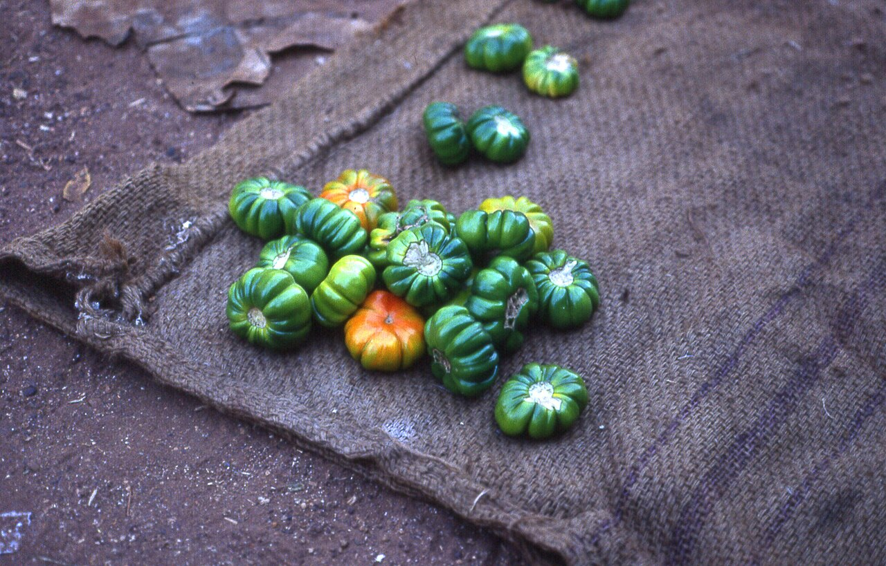

Légume
Aubergine africaine
Solanum aethiopicum / S. melongena — le « gboma » des sauces
- Cycle 90 à 120 jours, récolte étalée
- Mise à jour 2026-10-26
- Niveau de confiance partiel

Présentation et utilisations
Légume-fruit de base des sauces ivoiriennes : les variétés locales africaines (amères ou douces) sont très demandées. Rustique, productive, moins exigeante que la tomate.
Climat et sols
Sol meuble et fertile, pH 5,5 à 6,8, plein soleil. Redoute l'engorgement et les nématodes (même famille que la tomate et le piment).
Variétés adaptées
Deux groupes : aubergines africaines locales (fruits verts, rouges ou blancs, amertume variable) et aubergines européennes (fruit violet allongé). Le marché local décide du choix.
Calendrier cultural
Pépinière 3 à 4 semaines, repiquage en début de saison des pluies, récolte 2,5 à 4 mois après repiquage.
Préparation du terrain
Labour, planches surélevées, fumure organique 3 semaines avant repiquage.
Semis et plantation
Pépinière fine, repiquage à 4-6 feuilles, 70-80 cm entre rangs et 50-60 cm sur le rang.
Entretien, fertilisation, irrigation
Sarclages, paillage conseillé, irrigation régulière sans mouiller le feuillage. Tuteurage léger des variétés lourdes.
Engrais : quoi, combien, quand
Même logique que la tomate : fumure organique conséquente, azote fractionné, potassium à la fructification.
| Apport | Dose | Quand | Comment |
|---|---|---|---|
| OrganiqueCompost ou fumier décomposé | 15 à 20 t/ha | 3 semaines avant repiquage | Incorporé sur la planche |
| MinéralPhosphore (P2O5) | 40 à 60 kg/ha | Au repiquage | En poquet |
| MinéralAzote (N) | 80 à 100 kg/ha | 1/2 à la reprise, 1/2 à la floraison | En bande |
| MinéralPotassium (K2O) | 80 à 120 kg/ha | Dès la floraison | En bande |
Doses par hectare, à ajuster selon l'analyse de sol.
Repères de fumure : ANADER
Maladies, ravageurs et prévention
Flétrissement bactérien, viroses, acariens et aleurodes. Rotation obligatoire, plants sains, surveillance du dessous des feuilles.
Récolte et post-récolte
Fruit ferme et brillant, avant maturité complète (la chair devient amère et dure). Récolte toutes les semaines.
Conservation et transformation
Quelques jours à l'ombre ; séchage possible en tranches pour les variétés locales.
Coûts, rendements et débouchés
Débouché local solide, y compris auprès des restaurants de rue. Calculer la marge avec le prix du marché de gros de la semaine.
Tutoriel étape par étape
- Éviter la parcelle à solanacées
Après tomate, piment ou aubergine, attendre 3 ans : les nématodes et le flétrissement restent dans le sol.
- Faire une pépinière propre
Terre fine, semis clair, ombrage léger, arrosage matinal. Repiquer à 4-6 feuilles.
- Pailler et arroser au pied
Le paillage garde l'humidité et évite les éclaboussures qui propagent les maladies.
- Surveiller les acariens
Feuilles pâles et fines toiles dessous : traiter tôt, retirer les feuilles atteintes.
- Récolter ferme
Fruit brillant et ferme. Trop mûr, il devient amer et dur.
- Vendre local
Les restaurants et les marchés de quartier achètent en petites quantités régulières : arroser la régularité plutôt que le volume unique.
Sources, vérification et limites
- Base de connaissances interne · knowledge/agronomie.md, knowledge/techniques_agricoles.md (consulté le 2026-10-25)
- ANADER · Appui-conseil maraîchage (fiches techniques) (consulté le 2026-10-25) — consulter
Limites de cette fiche. Variétés locales, densités et rendements non documentés dans les sources internes : à confirmer avec l'ANADER de votre zone.
Dernière mise à jour : 2026-10-26. Les prix, rendements et calendriers locaux ne sont mentionnés que lorsqu'ils sont documentés ; dans le doute, la fiche le dit.